今日はとある撮影がありました∩^^∩わーい
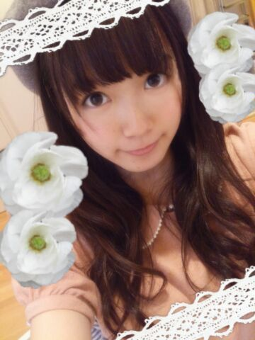
露骨すぎる加工......
こーゆーときセンス問われるのかな←
とっとにかくっ
ゆるふわーな感じ、ナチュラルな感じにしたくて
くるくるツインは今回は封印です。
あんま普段みたことないような表情で
たくさん撮っていただきました！
楽しみにしててねー


真夏さんブログに
ひめたんいっぱーいでてきた＼(^O^)／んぱ
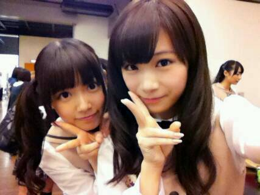
真夏さん(秋元真夏ちゃん)とね
最近さらーに仲良くなったのー
日芽「ひめたんびーむ♪♪」
真夏「ばきゅーん♪♪」
陽菜「は？」
これがお決まりなのー！
真夏とねーいろんなこと話すんだよー
ひめたんは学校もあるから
大変だなーってなってへこたれてることが
よくあるんだけど
そんなとき彼女が慰めてくれます(´;ω;｀)
この前も気がついたら１時間とか
話し込んでたみたいー♪
真夏とだと結構素直になんでも話しちゃう。
これからも仲良くしてね(〃ω〃)/
ホットドリンクが美味しい季節
今週のマイブームは生姜入りのもの。
ジンジャーミルクティ、
ジンジャーはちみつのど飴......
カラダがあったまるような
気がするでしょ？ねっ
質問返しのアイコン変えてみたよー！

 ひめたんは枕が変わっても普通に寝れる？
ひめたんは枕が変わっても普通に寝れる？最近は枕が変わろうとお布団がなかろうと
どんな環境でも寝れるように
なってきた(´・ω・｀)
好きなふりかけは？？？のりたま！のりたま！
まんじゅうとケーキあったらどっちとる？？うちは断然ケーキ派 ひめたんもケーキ派っ
お誕生日はおまんじゅうより
ケーキでお祝いしたい派(〃ω〃)
もう今年も3ヶ月切ったけど
これゎやらなきゃってことある？
やり忘れたこととかある？今年 映画館で映画みてなーい！
BAD BOYS J は
ミニシアターで観せていただいたけど
映画館全然行ってないなあ
何かオススメの映画はありますかー？
できれば...今期とゆーか...今年中......
もし乃木坂ドラフトがあって
ひめたんが指名する立場だったら
誰を1位指名する？悩むなー
乃木坂でドラフトするのは難しいねー
いくちゃんとかるんるんとかが同じチームなら
心強いかなー♪
ひめたんは抱き枕派？普通の枕派？
それとも何もなし派？枕があったら使いたいけど
なくても寝れちゃう。
抱き枕はねー好きなんだけどね
朝起きたらお部屋の隅っこにいます←
宮島口駅の名物のあなごめし弁当
食べた事ありますか？ないないのです(ヾノ・ω・`)ないない
あなごさんがなんとなく好きになれないの。
部屋真っ暗にして寝る派？
それとも小さい電気付ける派？豆電球は必須！
真っ暗だと怖いよねー！
ひめたんは、朝起きて１番に何をする？なんだろうなー
伸びるかな。のびーって＼(^O^)／
それでポキポキって鳴ったら１日がんばれるかな
ひめたんは
最近良く聴くアーティストは誰ですか？田村ゆかりさん
遅ばせながらハマってます
かわいらしいなあ......きゅんきゅんしちゃう。
ひめたんは朝髪型みすったらどうする？いつもキレイにできないよ( ∀ )
でも時間ギリギリだーってことが多いので
割とそのまんまだったりする←
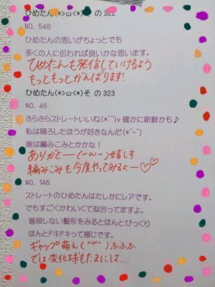
いつもコメントありがとうございます
おとこのこ「きゅんきゅんしたー」
おにゃーのこ「ひめたんみたいになりたいー」
とか最近よく見かけます(´;ω;｀)嬉しす
おさげ好評でほっとしました！
BUBKAチェックするよーって方ありがとう！
明日は乃木どこ、あさってはMJ収録
よろしくお願いします。
さーてー明日は何をしようかな♪
(＊´・ω・＊)
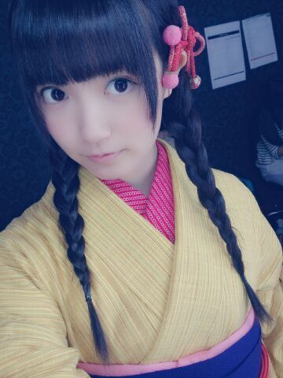
月の大きさ MV公開されました！
おさげの町娘がひめたんです＼(^O^)／
がんばってみつけてみてね！
着物は慣れないのもあってか苦しくて
うおーやばーいーってなりながら着ました♪
着物が似合う人ってステキだよね
この撮影は
町娘さんのシーン、くノ一さんのシーンみたいに
シーンごとに撮っていく感じだったので
丸一日 町娘さんたちと一緒に過ごしたんだよー
楽屋も基本的に一緒。
この撮影で３人とはさらーに仲良くなりました◎
＼ 町娘さんちーむ ／
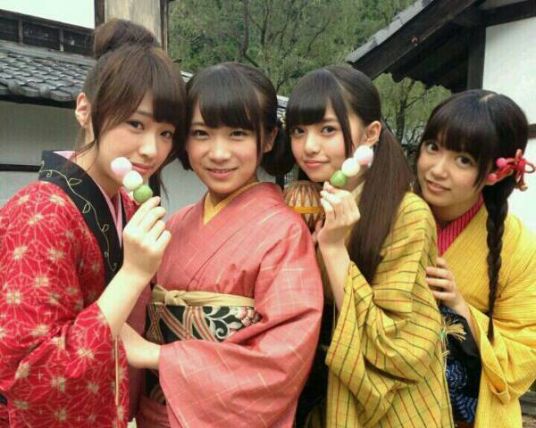
今日はBUBKAさんに取材していただきましたっ
なんと、ひめたんなんと、
ひとりで雑誌の取材していただくのは
初めてなんです＼(^o^)／
たくさんお話して
写真も撮っていただきましたー
テーマは「ギャップ」かな♪
11月29日発売です！
そうそう、
お手紙とプレゼント受け取りましたので報告。
お手紙はお風呂入ってから
あとでじっくり読もうと思います(*´ω`*)るん
プレゼントも一生懸命選んでくださったんだなって
照れちゃう。うれしゅう気持ち///
大事にします本当にありがとーう！
いつもコメントありがとうございます
いくちゃんとの
デュエット何歌ったのー？
って質問がとーっても多かったのでさらっとお答え
ライオン

(May'nさん中島愛さん)

 メンバーって自分の生写真は全部持ってるの？
メンバーって自分の生写真は全部持ってるの？
もしかしてフルコンプ？？持ってないよー！
川後さん(川後陽菜ちゃん)とか
毎月BLTさんのNOGICAMERA楽しみにしてるよー♪
あ！そいえば今月はひめたん当番だよー
みんなよろしくねー＼(^o^)／
ひめたんは授業受けるとき
ノート派？ルーズリーフ派？それとも乃木坂派？ノート派(即答)
ひめ！目玉焼きはなにかける派か教えてちょ！オタフクソース派！
広島名物なんだけど、とっても美味しいのー
何にでも大体合うよ☆
気になったらお取り寄せしてみてねっ
ひめたんが可愛いすぎるのが最近の悩み
推し変してしまいそう！こういう時はどおしたらいいのかなぁ?ひめたんは嬉しいけどー
推し増...とかどうかしら(*´ω｀*)
えーほんとに嬉しい。ありがとーう！
ちなみに可愛さなんて微塵もないんだから
お願い悩まないでー
中元さんは広島弁の「ぶち〜」と「ぼれぇ〜」
の言葉どっち使ってますか？「ばり」派でした(笑)
ばり美味しい！ばりたいぎい！とかねー
広島弁はいろいろあるから難しいよね
ひめたんと
まあや(和田まあやちゃん)でも
使う言葉が違うのです
ひめたんが、写真集の撮影で
一番苦労したことは？何日かお泊りしたんだけど、１日目の夜に
ホームシックになったことかな(´・_・｀)
楽器が出来る異性ってどう思う？ステキだと思います！
ひめたんはできない人だから
なんか尊敬しちゃう☆
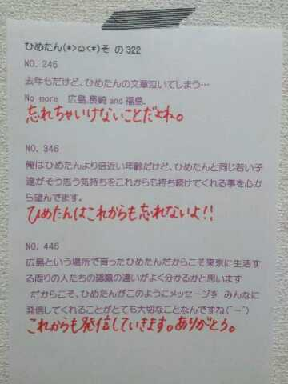
スキンケア一式
Kiehl'sの美白ラインに変えてみた！
調子よかったらまた報告するねー♪
(＊´・ω・＊)
バラ園からこんにちは。こんばんはかな？
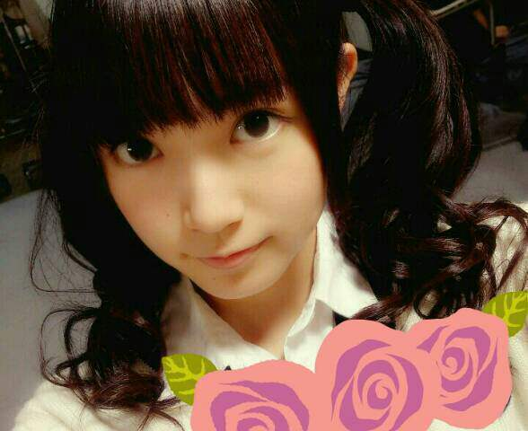
更新あいだが空いちゃってごめんなさい
お待たせしました！
いくちゃんの漢字が間違ってました
いくちゃん、いくちゃんファンのみなさん
本当にごめんなさい。
いくちゃんにはお菓子を持って行って
涙を流しながら土下座して謝罪
するくらいの気持ちで
メールしておきました(´・ω・｀)
いくちゃんファンのみなさんにも今
画面を通して全力で頭を下げています
伝わると......いいな。
そんな
いくちゃん(生田絵梨花ちゃん)とは
この前お泊りしたんだよ＼(^O^)／
明日はせっかくのオフだから
お布団敷いてまったりお話して
朝目が覚めた瞬間から一緒で
しかもそのまま遊びに行けたらステキだよねって♪
ほんとにステキないちにちでした！
るんるん(斎藤ちはるちゃん)もだけど
中３組はお仕事がない日も学校があるから
なかなかプライベートで集まれなくて。
るんるんは次の日に予定が入ってたから
この前は残念だったけど
今度は３人でお泊りしようねっ☆
今ごろ修学旅行かーたのそうだなー( ω )
＼う／＼い／＼あ／
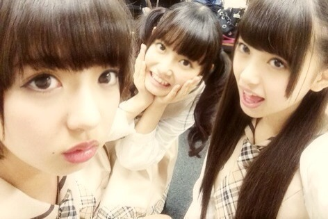
みーんな中学３年生


ぺろ
まあやのりっぷはせくしーですね
あすかりんもせくしー
ひめたんも......
日曜日はロックの学園に
出演させていただきました☆
私たちが先生だなんて
はあああうっ(・O・ノ)ノ
乃木坂ちゃんのロック魂は伝わったでしょうか。
結構ボリューミーなセットリストでした！
13日の金曜日はなんと10人バージョン。寂しい。
遠征チームさんもお疲れさまでした。
最後は
みおちゃん(堀未央奈ちゃん)も一緒に
バレッタ初披露させていただきましたー
生で見れた方はラッキー(´ω`)
これから番組とかライブとかで
たくさん歌いたいなー♪
前回の乃木どこみてくださったかなー？
楽屋での生態調査なんて
ちょっとどきどきしちゃうよね(〃ω〃)
あの収録のあとから
みおちゃんが
一緒にお手洗い行ってくれるんだよー♪
あーでも、常に水分取るとか
そんなことしないでね←
開運と日経エンタテインメント！も
チェックしてくださった方ありがとーうっ
開運は告知が遅れてしまってごめんなさーい！
ひめたんは
みさみさ(衛藤美彩ちゃん)のコメントに
改めてウルウルしそうになりました(´;ω;｀)
東北楽天ゴールデンイーグルスさん
おめでとうございます！日本一！
今年もプロ野球で
日本中がアツくなりましたねー
やーステキだなーかっこいーなー
ひめたんも野球やってみたい！

 今月だけで50時間以上残業して
今月だけで50時間以上残業して
疲れがあまり取れないので、ひめたん励まして！！わー大変だ( ；∀；)お疲れ様です
そうだなーひめたんの感覚だと
オフが少なければ少ないほど幸せって思っちゃう。
ただ体力的にはキツいですよねー
毎日しっかりお風呂浸かってねー
好きな子にかわいいと言われるんですが
僕は男です、どうすればいいかなー？褒めてるからいいんじゃないー？
だめかしら(´ω`)
ひめたんは
男の1人称は俺派ですか？僕派ですか？どっちでもってゆっちゃアレだけど
そんなこだわりはないかなー
私、拙者、某......
どれもステキですよ。それがし！
足の裏くすぐられたりするの大丈夫？多分だめかなー
基本的にこしょこしょは弱いです
だからやっちゃだめだよ( ^ω^ )
ひめたんが妹だったらどんな特典がある？もれなくひめたんが甘えてくれ......
うん？それだけじゃ足りない？
そうだなーじゃあ
一緒にバケツプリン作ろーりぼん買い行こー♪
ひめたさんは眠気を覚ましたい時
どうしますか？
オススメのアイテムあったら教えてください眠くなったら
本能に逆らわず素直に寝ちゃうんだよねー
あっブラックコーヒーとかどうかしら？
でも飲んでも眠い時は眠いです。しゃーない。
ひめたんはポケモンとかするの？？やったことないなー
まっちゅん(松村沙友理ちゃん)が
すんごいやってるよねー(^O^)
テスト終わったぁぁ♪
でね！国語が96点でクラス一位だった！
誉めてーwwお疲れさまーおめでとー！
クラストップなんてやばいねーやりおるね／(^^)＼
最近、ひめきゅんを通り越して
ひめきゅきゅんきゅんになちゃってきてるけど、
ひめたんなんかした？笑笑それはやばいです末期です。
えーひめたん？
原因ひめたんなの？あれーなんでかなー♪
ひめたんが乃木坂にいて
一番やりがいを感じる瞬間は？どのお仕事もやりがいを感じるけど
やっぱりひめたんはライブが好きなので
ライブのあととかかな。
全国ツアーや代々木を経て
ライブの取り組み方とかも成長できた気がします！
ひめたんはおでんの具は何が一番好き？白滝さーん(*^O^*)
いつもコメントありがとーう

みんなひめたんお人形さん
くださーいって言ってくれて照れたよー///
でもねーいっこしかないんだー(・∀・)
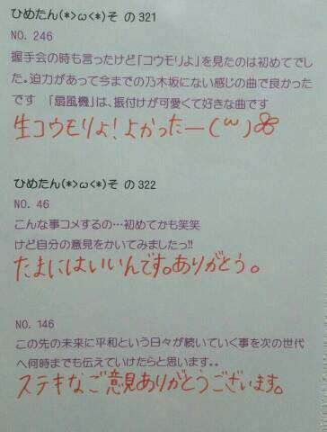
(＊´・ω・＊)
7thシングル表題曲「バレッタ」
MV解禁されましたー
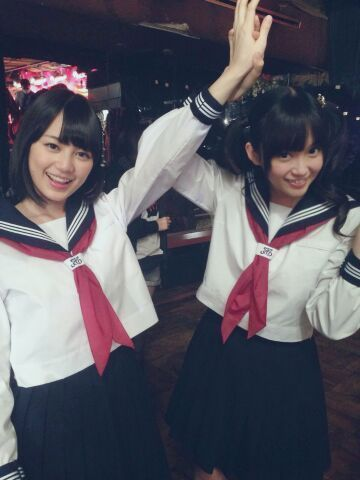
いえーい！
見てくださいこの
いくちゃん(生田絵梨花ちゃん)の屈託のない笑顔。
いくちゃんがとっても楽しそうなので
あたしも楽しいです(o^ω^o)
みなさんもうチェックしていただけましたかー？
表題曲のMVの中に自分がいるなんて
本当に光栄なことです(´:ω:｀)
ちょーいーちょーいー登場するから
よかったらみつけてみてねー
高めツインがぴょこぴょこしてたらそれひめたん。
そうそうMVの中で
おにんぎょうさんになったんだよー
ひめたんの人生における大きな目標が
「おにんぎょうさんになる」だから
ちょっと叶ったみたいで嬉しい(´ω`)
なんかイマドキのJK風おにんぎょうさん......
おひとつ、いかが？
なんてねーぐひっ
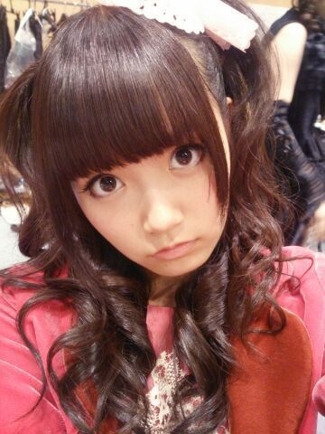
ハロウィン２日目は
ハーフツインふわふわ。
キリッとしたひめたん。キリひめたん(｀・∀・´)
 手紙をハガキで送ったらボツかなぁ？
手紙をハガキで送ったらボツかなぁ？ボツなんてないないない！
届いたら読みますよー！
ありがとーうね( ^^ )
なに丼が一番かわいいと思う？月見丼とかかわいいと思う(*^O^*)
ひめたんは 美術館とか、
そういうところって行きますか？？プライベートでは行かないかなあー
ステキな美術館知ってたら教えてくださーい♪
ブログのコメントよりも、
お手紙書く方がうれしいかな？そ、そんなことないですっ！
どっちも嬉しいし、それぞれに良さがあるよねっ
お手紙だと受け取るのに時間がかかってしまうので
そーゆー意味でブログコメは身近な感じがするし
でも手書きの文字もステキだし。
ひめたんのビーム食べたらどうなりますか？ひめたんは食べたことがないけど
みなさんがきゅんきゅんしたらいいなー
失神したらごめんなさいね(・∀・)
広島でまだ行ったことなくて
行ってみたい場所とかは？？ちっちゃい頃に行ったこと多分あるんだけど
記憶がないって意味で
みろくの里に行きたいです＊
◎11/2 TBS 開運音楽堂
◎11/2 日経エンタテインメント！
チェックよろしくお願いします∩^^∩
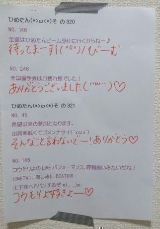
(＊´・ω・＊)